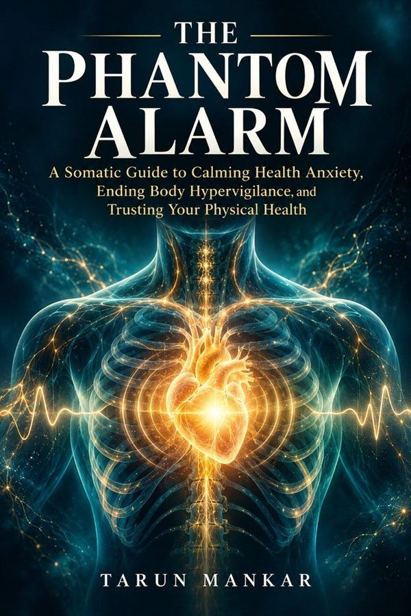

A harmless muscle twitch near your ribs. A brief flutter in your heartbeat. A sudden wave of lightheadedness after standing up.
Within ten seconds, your attention locks onto that sensation like a spotlight. You start checking your pulse every two minutes, searching symptoms online, and bracing for catastrophe—even when doctors tell you everything is fine.
"Health anxiety is not hypochondria. It is an over-protective interoceptive radar magnifying normal bodily noise into life-or-death emergencies."
Interoceptive Hypervigilance Explained
Your insula and autonomic nervous system constantly monitor internal sensations—heartbeats, digestion, muscle tension. When baseline anxiety is high, the brain turns up the sensory volume knob.
As soon as you focus fearfully on a benign twitch, adrenaline spikes, which actually creates real physical symptoms (tight throat, tingling fingers, faster pulse)—confirming your brain's worst fear in a self-reinforcing loop.
- Sensory Amplification: Normal digestion or posture tension feels ominous.
- Checking Compulsions: Repeated pulse-checking and Google searching spike cortisol further.
- Distrust of Your Own Body: Feeling like your own physiology is a ticking time bomb.
The 60-Second External Orientation Reset
Break obsessive inward body-scanning by shifting sensory bandwidth outward (after ruling out true medical emergencies):

The Phantom Alarm
A Somatic Guide to Calming Health Anxiety, Ending Body Hypervigilance, and Trusting Your Physical Health
- Bottom-up 60-second nervous system resets you feel in your body
- Daily somatic protocols designed for overwhelmed modern minds
- Available in Kindle eBook, Prime Paperback & Studio Audiobook
Three Rules for Rebuilding Body Trust
- Ban late-night symptom searching: Search engines always rank rare worst-case scenarios at the top.
- Distinguish sensation from catastrophe: A tight chest muscle is a sensation; 'I am dying' is a fearful story.
- Partner with your body: Your symptoms are noisy messengers asking for rest, not enemies.
Frequently Asked Questions
Ready to Trust Your Body Again?
The Phantom Alarm gives you clear somatic protocols to quiet health anxiety and stop obsessive body scanning.
📖 Get "The Phantom Alarm" on Amazon (Kindle & Print) ↗